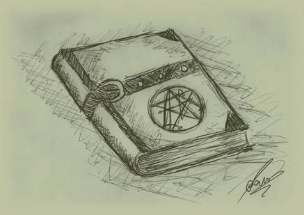
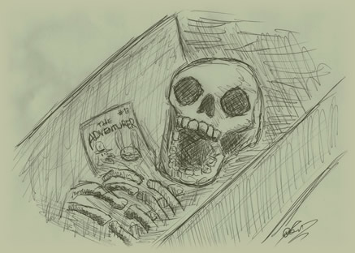

The Adventures of
Ronald and Timothy,
as documented by Timothy Gilbert, Esq.
by
Part I
It was a fine morning upon which I decided to pay my good friend, Dr. Ronald Schafer, a visit. We had oft discussed the possibility of working together again, but practical impediments always got in the way. Today however, I resolved once and for all to stop worrying about future or past. I put on my best spats and went on my way to Dr. Schafer’s mansion.
It was a strange place, but I had grown fond of it in the many years our friendship had accumulated. The fountains in particular were off-putting to most visitors, but I saw a certain charm in them. While the vogue at the time was to litter one’s grounds with statues of naked ladies holding pitchers from which flowed an abundance of clear liquid, Ronald—we are on first-name terms—had boldly elected to have grotesque depictions of tentacles decorate his garden. What is more, they spewed forth not water, but a gruel that looked like toxic sludge.
I could go on describing the estate, with its kumquat trees, the statue depicting a drunken sailor holding a spyglass, and countless other extraordinary features, but I do not wish to bore you with such trifles. Therefore, let me get straight to the point where Dr. Ronald Schafer and myself, Timothy Gilbert, sat down with a glass of the finest whisky and ditto cigarillos, to a most interesting conversation that would forever alter the course that the vessels of our lives would take.
“I say, Timothy, how good of you to come. And not just that, it is of a coincidence most extraordinary too! Why, if I were not a man of science, I would have had great trouble believing it to be mere coincidence.”
“How so?” I inquired, utterly discombobulated at this most unusual remark by which my good friend welcomed me.
“I have been thinking about your proposal of working together again. At first it seemed impractical and even ill-advised. We are both men who have achieved success on our own merits, and to throw that independence away seemed, to me at least, folly. But then I started thinking… what if… what if we could change the world?”
At this, I merely looked at him. He must have spotted the look of incredulity on my face, for he continued thus:
“Yes, my dear Timothy, I am talking about changing the world as we know it. Fondly do I remember the times when we sat down together, making great works of art, unleashing the very fire of Prometheus on the unsuspecting souls inhabiting this mortal coil. We can do that again, Timothy, but we must look beyond the capabilities of mere humans. Long did I pour over the many pages contained in the local library—”
“The one with the picturesque lighthouse model, and the loudmouthed bespectacled lady who is always telling others to shut up?”
“The same. And finally, my search ended when I came upon this book.”
Here my friend produced a leather tome with strange markings on its front cover.

“What is it?” I said, shaking my head, for I knew not how else to react to such an unusual piece of literature, if literature it was.
“This, Timothy, will change our lives, and not only ours, but those of everyone who walks upon the face of the earth.”
“But what is it?”
“I am struggling to find words to describe it.”
“But what is it?”
“It is a book of necromancy.”
“My God!”
“Rest assured, I am still merely Dr. Ronald Schafer, a mere mortal. But with this, we can at least assure that our names will never be forgotten. We shall make history, Timothy, my friend.”
I knew the request that was burning on my lips was nothing less than profane, but still I could not contain my excitement, and asked my friend to share with me the book’s contents.
“I could go on and on about my findings,” said he, “but for brevity’s sake I shall distil them down to the one major insight I have gleaned, which will aid us tremendously in resuming our business of producing great works of interactive art. Do you know of the alchemists?”
“I beg your pardon? The alchemists? Do you propose to turn mundane materials into gold?”
My friend shook his head. “No, you have it the other way around. What I propose to do is to take gold and turn that into something even more magnificent.”
I could not contain my laughter. “My dear fellow, I hope you have not gone completely mad. What is it that you intend to do?”
“Simple. Once we have amassed enough gold, we can use it to follow the formula propounded within the pages of this book.”
“But how do we get an amount of gold, such an amount as would surely be quite astronomical, and dare I say humongous, in the face of the task you see before the two of us?”
“That question,” said the doctor, tapping the book he was still holding as if it were his firstborn, “is also answered within these very pages. All the steps to resurrect our ancient profession are mentioned herein. We shall have to gather something of the thread, something of the head, something of the body, and something of the dead.”
“My friend, you speak in riddles.”
“Not at all. It is all quite clearly explained by the author of this book, whose name I sadly have not been able to uncover. For now, let us concentrate on the first task. By ‘something of the thread’, the author means we should come into contact with likeminded individuals, who, although not as artistically or intellectually gifted as ourselves, have nonetheless the best interest of our particular genre of interactive amusement in mind, and, moreover, oodles of gold.”
“You are proposing that we rob them?”
“Naturally I am not. I say we should ask them to give it to us.”
“Ha, ha! Ho, ho! Heh, heh!” I said, and stood up to feel my friend’s forehead, for at this point I truly believe he had been seized by a terrible fever. He, however, assured me this was not the case, and calmly continued his explanation.
“We shan’t ask them to give us their precious gold for naught, of course. According to this book, we need merely visit a public house, a place where all the people who matter gather themselves; the equivalent of the Forum Romanum or the Areopagus in ancient times.”
“But what, pray, do we have to offer in return?”
“The promise of a grand work of art.”
I was well and truly perturbed, but at the same time, a glimmer of elation sprang up in my heart. What if my friend was right? That the promise of residing in the company of Apollo himself would be reason enough for people to part with their monies? I dared not dwell on that thought, but my heart had started beating faster, and in the end it was I who proposed, nay, demanded that Ronald accompany me to Mucks’ Bar, the public house where all the beau monde of the interactive literature world, both proponents and critics, gathered together to drink and make merry.
{kind=link}
“Hullo, Mucks,” said my friend as we entered the bar.
We were greeted at first not by the proprietor himself, but by a small dog, that came running up to us and started scratching at our pantaloons.
“Here, Spiffy,” the innkeeper, a jolly man with a handlebar moustache, called to the dog. “Now, how may I serve you fine gentlemen?” he asked, before polishing the glass eye that had popped out of its socket.
“We—” began my friend, but he was cut short when Mucks actually saw who it was that addressed him.
“Great Scott, why, if it isn’t Dr. Schafer! To what do we owe this great pleasure?”
All at once, the bar went silent. The pianola stopped playing, the murmur of the patrons died down, even the alcohol fumes seemed to dissipate.
“Why if it isn’t that good for nothing quack Ronald Schafer!”
“Here we go,” my friend said to me from between clenched teeth at the corner of his mouth. Then, addressing the base fellow who had spoken to him in such a vulgar manner, he said: “Frederick Anboy… of all the lowdown guests I would expect to find in such an establishment as this… no offense meant, Mucks.”
“None taken,” said the bartender, who was hoping for a nice fight. There would be none of that, however. My friend, with admirable composedness of manner, explained the purpose of his visit. At first, the assembled company reacted rather sceptically, but after Ronald produced from his pocket some pieces of pasteboard with artistic imagery related to his planned project, the worst critics held their mouths shut. When next he showed a flip book with a very amusing animated sequence showing a pirate getting such a scare that his wig jumped into the air, even Mr F. Anboy held his tongue.
When Ronald then began telling of his plan to offer everyone present a far, far greater beauty in return for a sum of money, little or small, the bar was enraptured, and soon all the patrons were lavishing us with their riches.
As we walked home, I commented on the singular occurrence at the public house, but my friend seemed not at all surprised.
“Timothy,” he said, “I told you we could make this happen, but you would not believe me. Surely now your scepticism has subsided?”
“Yes, a thousand times yes! That book of yours must truly be magic. Now,” I said hurriedly, “tell me again, what is the next step we must take?”
“We must go to the Lucas Institute of Beaux Arts, where we shall enter into the deepest vaults to reclaim what is ours.”
“You mean… the very documents that detail how to make almost superhuman creations? The Sacred Codex Used to Make Magic?”
“That is the collection of scrolls I am speaking of.”
“But they are guarded by an impenetrable fortress! And some say they do not even exist.”
“Nevertheless, they do. They are in actual fact the ‘something of the body’ the book speaks of. To get to them, we must first solve a collection of puzzles.”
“Something of the head?”
“Something of the head. Come, my friend, let us go.”
The fuzzy light of the street lanterns, shining through the evening mist, bathed the river banks in a soft, almost unearthly glow. A feeling of Unheimlichkeit came over me, but my friend seemed unaffected. He strode resolutely towards the Lucas Institute of Beaux Arts, but suddenly halted when he spotted a guard outside the entrance, which was no more than a wooden door in an inconspicuous brick wall.
“Who goes there?” the moustachioed guard demanded.
My friend, thinking quickly, responded: “Nobody but us two fine upstanding gentlemen, who wish to seek shelter for the night within the catacombs of your reputable institute.”
“If you are such fine upstanding gentlemen, then where, pray, are your moustaches?”
“He has us there, Ronald.”
“Not quite, my friend. Follow me.”
He led me to an old shed we had passed by earlier.
“Here lies the solution to our problem, friend Timothy.”
“But how? Is there perchance a secret entrance here to the Lucas Institute?”
The doctor shook his head and pointed to a hole in the door of the shed. The look in my eyes conveyed that not only did I not catch his drift, but I was sailing on another ocean of understanding altogether.
“Look, Timothy, look! Do you not see the black hairs? When we passed here earlier, I spotted a black cat who was apparently running away from some fight or a situation akin to it. Upon entering the hole, some hairs were caught on the wood. Surely we could use that to decorate our upper lips to the guard’s satisfaction.”
“But, how on earth do we affix those hairs to our faces?”
Hereupon, Ronald produced from his waistcoat pocket a small bottle of maple syrup.
“By George,” said I, “what in the Devil…”
“I must confess, my love of pancakes is such that I always carry a little bottle of maple syrup, so that I am never unprepared when this treat is served me unexpectedly. But in this case of emergency, we shall use it not to adorn a meal, but as a substitute for glue.”
Having thus pasted the black cat hairs on our upper lips, we had little difficulty gaining entrance to the catacombs underneath the Lucas Institute for Beaux Arts. What we found there defies description, but for clarity’s sake I shall make a brief attempt at relating the contents of the subterranean antechamber. Lit only by a few torches, it was hard to see anything in the dark tunnels. What we could see lying about were a rope, two revolvers, a pocket knife such as recently came into common use among Swiss officers, and a bag of wooden nickels.
“Ah,” said Ronald, “it seems advisable to pick up anything that may be of aid to us later on. I shall take the rope and the knife, while each of us will grab hold of one revolver.”
Several minutes later, we had traversed a number of rooms without incident, when we came upon a locked door. Next to it was a machine that purported to vend tin containers with a corrosive liquid under the name of “Grog”, in return for a wooden nickel, which had to be inserted into a slot designated for the purpose. There was nothing for it but to go all the way back to pick up the bag of wooden nickels.
When we finally returned, quite out of breath, I ventured to insert a wooden nickel into the device. A can was shot from the machine into a hole in the wall opposite, out of our reach. My friend had the presence of mind to remove his tailcoat, which he hung upon a hook that was suspended above the hole into which the grog had disappeared. When next I inserted another nickel, Ronald’s coat caught the can in flight; however, much to our dismay the can fell not onto the floor but into a drain, again out of reach.
By now we were beginning to despair. I laid my hat upside down over the drain hole so as to catch the next can. This appeared to do the trick, however, as soon as the can had entered my hat, a rat appeared and scurried off with it, can and all. At this point I took my revolver, and not knowing what to do, I first shot at the machine, and then at the lock. To my amazement, the shot completely destroyed the lock and the door opened.
“Sometimes the most obvious solution is the one that works best,” my friend said.
“Yes,” I agreed, “perhaps our minds have been twisted from designing all those puzzles and riddles. We are not thinking straight.”
Ronald nodded. “But let us not give up now. We are so close to our target, I can almost smell it!”
In the next room however, our progress was halted by a ferocious-looking animal. It was a hell-hound, a dog with three heads, its eyes glowing red.
“You shall not pass,” it said, “unless you can guess my name.”
At this, I smiled. “Why, it is a good thing I was a valedictorian at grammar school. Roman and Greek mythology hold no secrets for me. Your name, infernal dog, must be ‘Cerberus’.”
The hound shook its three heads. “Sometimes it is wise to think backwards,” it said.
“Ah… in that case your name cannot be anything else but ‘Surebrec’.”
Again though, the dog shook its three heads, prompting me to give up. My friend was scribbling furiously on a piece of paper however, as if decoding a cipher. I dared not interrupt him, partly for fear of yet another disappointment. After what seemed like an hour, although it could not have been more than a couple of minutes, Ronald announced he was ready to try the riddle, and spoke the hell-hound’s name.
“Xviyvifh,” he said.
I must admit at this point I thought that he had been struck with apoplexy, or perhaps the dog had bit him and he had contracted rabies. However, to my astonishment the dog began to dissolve, and disappeared into thin air.
“My friend,” said I, “I do not know what just happened, but you are truly a brilliant man! How did you work out the beast’s name?”
“I shall explain it all in detail to you later on, when we are at home enjoying a nice cup of cocoa in front of the fire, but now let us press on and finish our quest to find the sacred scrolls!”
I agreed and followed him into what would be the last chamber separating us from the Sacred Codex Used to Make Magic. In this room, we found nothing but a door in the far wall, and a skeleton lying next to it. Upon opening the door, we found it led to an empty space in the wall, a dead end. Likely the skeleton belonged to an adventurer that had died exploring these catacombs. So this would be our fate…
“Despair not, friend Timothy! Let us search this skeleton for a key.”

Ronald, being exceedingly familiar with human anatomy, began to search the bones. Now it was my time to display my clever wits.
“Ronald! I think I have it. What we need is not just any key… but a skeleton key. If we assume that this door is not merely a door that leads to an empty space, but the lid of a coffin or sarcophagus, it follows logically that it wants filling. I propose we pick up the skeleton and insert it into the empty space.”
After we did this, it turned out my estimation was indeed correct. As soon as we closed the lid, the coffin began to slide away, revealing an aperture leading to the treasure chamber where the Sacred Codex Used to Make Magic was kept. The events that befell us upon taking the scrolls and invoking its magic are too elaborate to pen down here. For that reason I shall relate them in a second part of this extraordinary history, which you will undoubtedly be able to read in the next issue of this excellent periodical.
{kind=link}